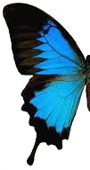
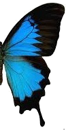

Hitokun's
My.status = (I as Programmer).canHelp(You) ? HAPPY : SAD;
Home
About
Contact
{{ item.name }}
Butterfly
Show Structure
Hide Structure
Stop
Start
If you see the butterfly flying, your browser supports CSS3.
